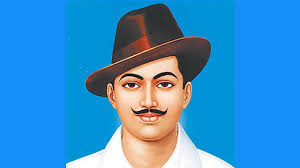

Bhagat Singh [Short Note]
Bhagat Singh was born into a Sikh family in 1907 in Lyallpur District, present-day Pakistan.
- Bhagat Singh's family members were involved in the freedom struggle and he was drawn towards the Indian independence movement from a very young age.
- As a child, he defied the British government by burning textbooks recommended by it.
- Initially, he supported Mahatma Gandhi and the Non-Cooperation Movement.
- However, when Gandhiji withdrew the movement in the wake of the Chauri Chaura incident, Bhagat Singh turned to revolutionary nationalism.
- He was particularly affected by the Jallianwala Bagh massacre (1919) and the violence against unarmed Akali protestors at Nankana Sahib (1921).
- Inspired by leftist writings he read widely, Bhagat Singh was an atheist and against capitalism.
- Bhagat Singh age was 23 years when he was hanged.
- Bhagat Singh slogan was “Inquilab Zindabad”.
- Bhagat Singh Jayanti, which is also known as Shaheed Bhagat Singh's birth anniversary, on 28th September every year.

Shaheed Bhagat Singh
1907 - 1931
1907 - 1931
- Born : 28 September 1907, Banga, Pakistan
- Died : 23 March 1931 (aged 23), Lahore Central Jail, Pakistan
- Cause of Death : Execution by Hanging
- Parents : Sardar Kishan Singh Sandhu, Vidyavati
- Spouse : Dugavati Devi
- Children : Jasveer Singh, Kuldeep Singh, Paramjit
- Organization Founded : Naujawan Bharat Sabha & Hindustan Socialist Republican Association
- Notabale Work : An essay "Why I Am an Atheist"
- Criminal Charges /Panelty : Murder of John P. Saunders and Channan Singh / Death
- Cremation : 23 March 1931, The National Martyrs Memorial, Machhiwara